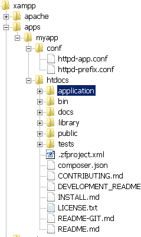

Start a New Zend Framework 1 Project
XAMPP makes it easy to start developing with PHP, and Zend Framework is one of the most popular PHP development frameworks. This guide walks you through the process of initializing a new Zend Framework 1 project with XAMPP.
| This guide assumes that the new Zend Framework application will be accessible at the URL http://localhost/myapp/. |
-
Download the latest version of the Zend Framework 1 minimal package as a ZIP archive.
-
Within your XAMPP installation directory (usually C:\xampp), create a new directory named apps\ (if it doesn’t already exist). Then, within this new apps\ directory, create a directory to hold your Zend Framework application and its related XAMPP configuration files. In this example, call the directory myapp\.
-
Extract the contents of the ZIP archive to the myapp\ directory. This will produce a _ZendFramework-[x.y]-minimal.zip\ subdirectory in the myapp\ directory. Rename this newly-created subdirectory to htdocs.
This new htdocs directory will be the main working directory for your Zend Framework project. -
Within the myapp\ directory, create a new conf\ subdirectory.
-
Within the new conf\ subdirectory, use your text editor to create and populate a file named ttpd-prefix.conf with the following content:
Alias /myapp/ "C:/xampp/apps/myapp/htdocs/public/" Alias /myapp "C:/xampp/apps/myapp/htdocs/public" Include "C:/xampp/apps/myapp/conf/httpd-app.conf"
-
Within the conf\ subdirectory, also create and populate a file named httpd-app.conf with the following content:
<Directory C:/xampp/apps/myapp/htdocs/public> Options +FollowSymLinks AllowOverride All Require all granted </Directory>
-
-
Edit the httpd-xampp.conf file in the apache\conf\extra\ subdirectory of your XAMPP installation directory and add the following line at the end to include the httpd-prefix.conf file created earlier.
Include "C:/xampp/apps/myapp/conf/httpd-prefix.conf"
Remember to update the above file and directory paths so that they’re valid for your system. -
Launch a new Windows command shell using the "Shell" button in the XAMPP control panel.
-
Within the command shell, change to the myapp\htdocs\ directory and run the following commands to create a new stub project.
bin\zf.bat create project .
-
Check that you have a directory structure like this:
 -
Restart the Apache server using the XAMPP control panel.
You should be able to access the Zend Framework skeleton application by browsing to http://localhost/myapp. Here’s what the default welcome page looks like:
You can now begin developing your Zend Framework application by modifying the skeleton application code. For more information, refer to the Zend Framework documentation.